Particuliers
Faire un don
Accompagnez l’Orchestre du Lointain et ses rencontres avec tous les publics.
Faire un don en lignePour un don par chèque ou virement, contactez-nous.
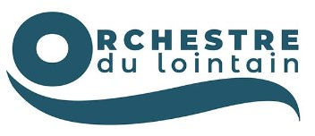
OrchestreMécénat
Particuliers
Accompagnez l’Orchestre du Lointain et ses rencontres avec tous les publics.
Faire un don en lignePour un don par chèque ou virement, contactez-nous.
Entreprises
Associez votre entreprise à notre saison musicale et à des projets artistiques ancrés sur la Côte d’Opale.
Consulter le dossier mécénatConstruisons un projet ensemble
L’orchestre peut contribuer au développement RSE : concerts, actions à l’hôpital, en EHPAD, auprès du jeune public … Nous pouvons créer des passerelles entre le monde culturel et l’univers de l’entreprise, pour des actions qui vous ressemblent. Partageant ses valeurs d’excellence et de partage, les entreprises peuvent accompagner notre orchestre au fil des saisons et s’investir à nos côtés dans des projets variés et créatifs.
En soutenant notre saison, vous contribuez au rayonnement de l’Orchestre du Lointain et de notre région, la Côte d’Opale, vous associez l’image de votre entreprise à un projet artistique ambitieux et innovant et vous vivez des moments privilégiés dans les coulisses de l’Orchestre.
Convivialité et émotion musicale sont notre ambition !
En tant que mécène, vous bénéficiez d’une visibilité dans tous nos supports de communication ainsi que d’invitations à certains concerts. Pour découvrir les nombreux avantages liés à votre engagement à nos côtés, contactez-nous : contact@orchestredulointain.com
Mécénat d’entreprise : un avantage fiscal sous conditions. Dans le régime général, la réduction d’impôt représente 60 % des dons jusqu’à 2 millions d’euros, puis 40 % au-delà. Les dons pris en compte sont plafonnés, par exercice, à 20 000 € ou à 0,5 % du chiffre d’affaires hors taxes si ce montant est plus élevé. L’excédent peut être reporté sur les cinq exercices suivants, selon les règles applicables.
Partenaires publics
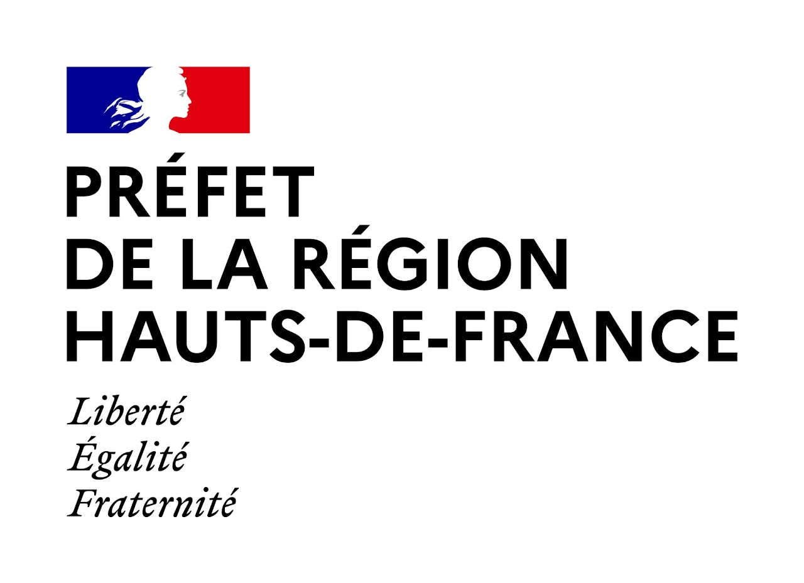
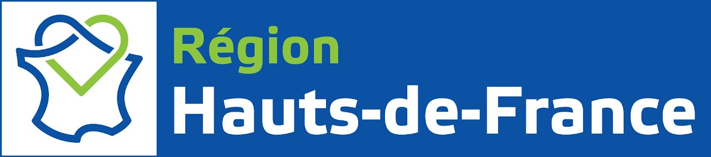
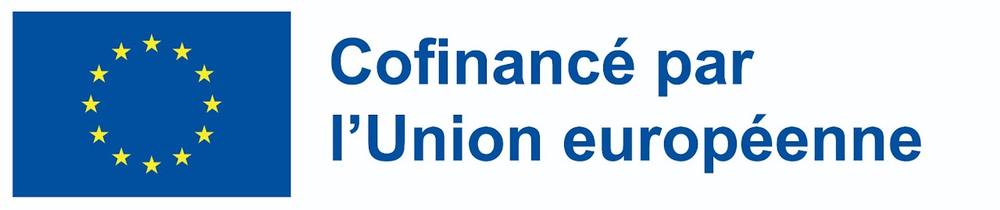
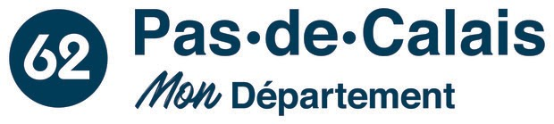
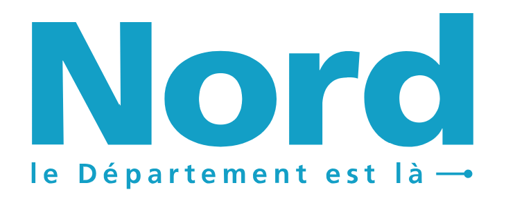
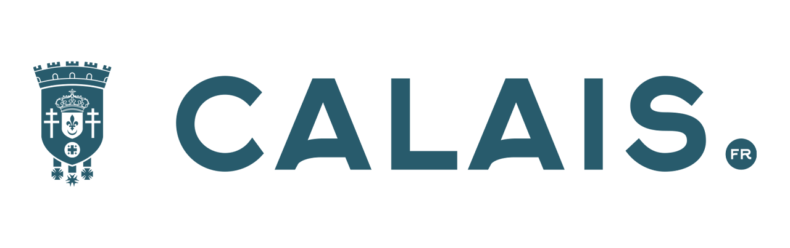
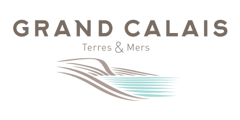
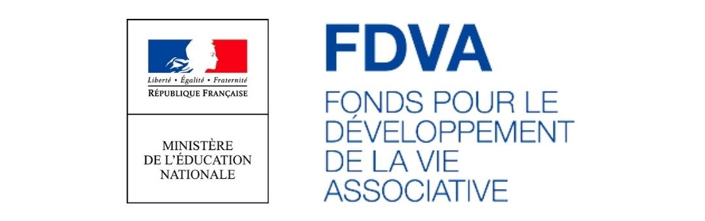
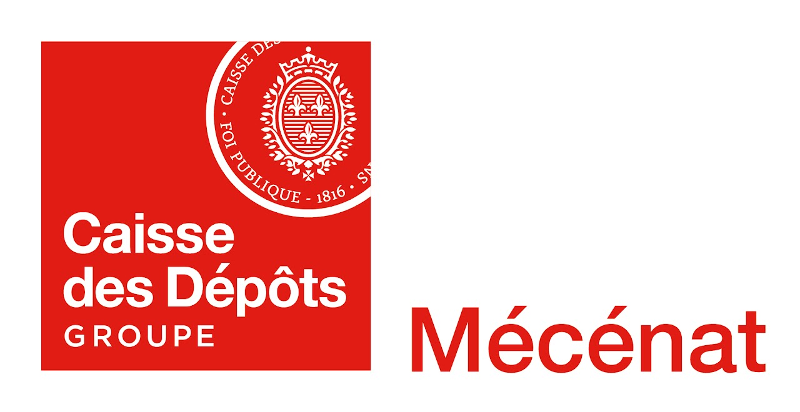
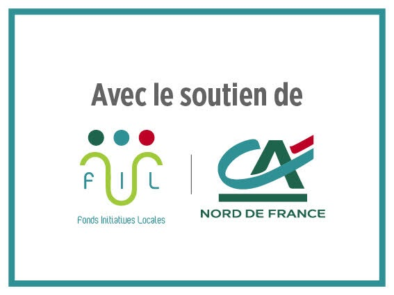
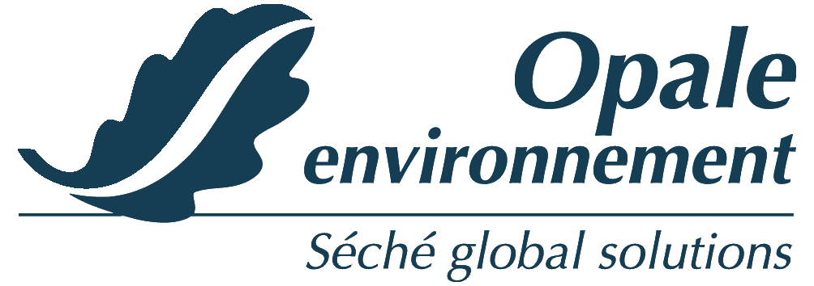